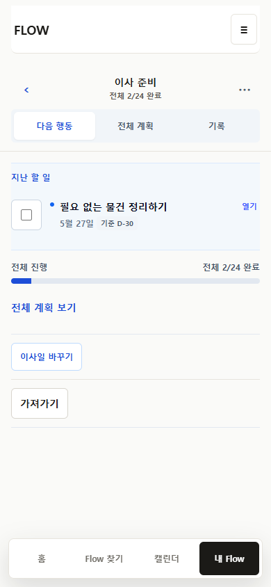
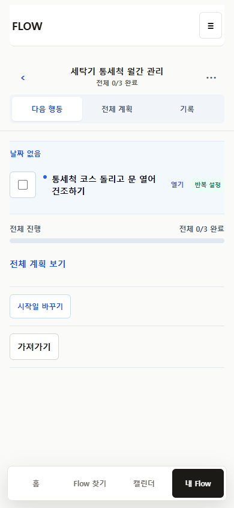
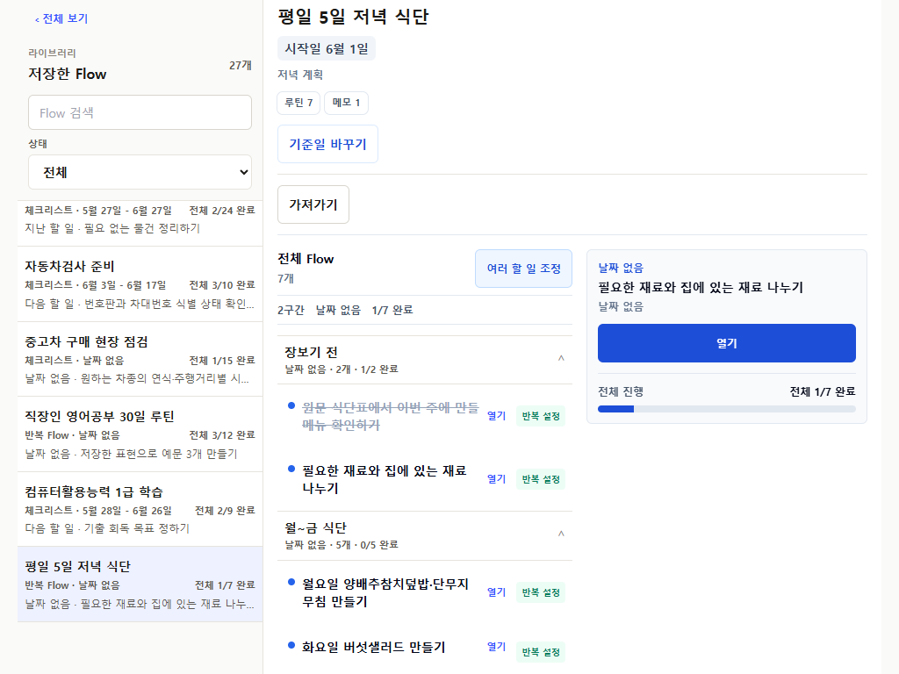
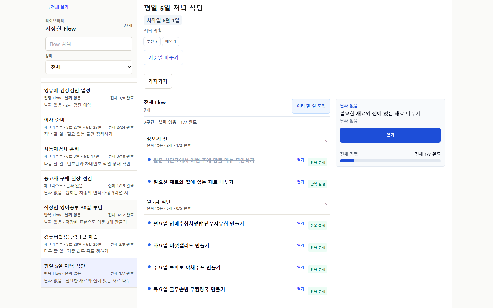

전체 판정
B1
cross-Flow queue를 유지하는 focused workspace
314 / 314
full Playwright
0
overflow · overlap · unnamed focusable · browser error
화면 문법
Library
지금, Flow 목록, 완료, 검색, 여러 Flow 비교
Flow object header, 다음 행동, 전체 계획, 기록, 기준일·가져가기·관리
완료와 분리된 제목·날짜·개인 메모 quick edit
Interaction 결과
| 목적 | P31 | P32 | 판정 |
|---|---|---|---|
| 특정 Flow 열기 | 2 | 2 이하 | 유지 |
| Item 제목·날짜·메모 수정 | 6 | 3 이하 | 개선 |
| whole export preflight | 6 | 3 이하 | 개선 |
| 보관 | 6 | 3 이하 | 개선 |
| reload 후 복구 | 6 | 4 이하 | 개선 |
대표 화면




유지한 계약
Identity
source, personal overlay, execution run, occurrence, export stable identity
Surface
4탭 IA, public /f, Calendar, portable export
Persistence
기존 localStorage key와 schema, migration 없음
남은 위험
실제 사용자 검증은 아직 0명이다. 자동화와 screenshot은 correctness와 화면 상태를 증명하지만, 이해도와 반복 사용성을 증명하지 않는다.
AppClient.tsx의 크기, fixture-only mixed shape, PostCSS advisory는 후속 관리 항목이다.
상세 자료
audit.md · route-evidence.json · journey-results.json · 독립 검토 프롬프트